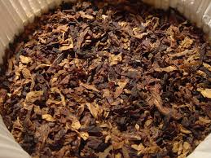
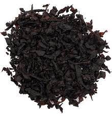
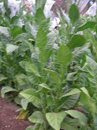
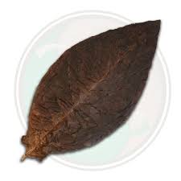
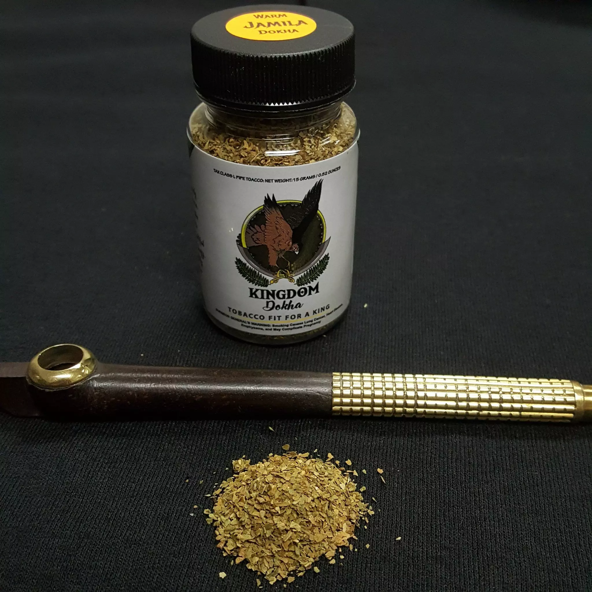
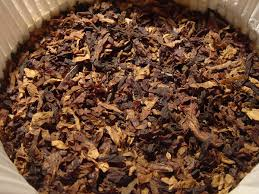
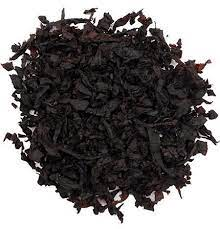
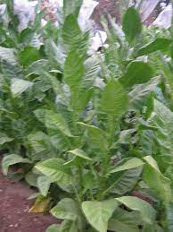
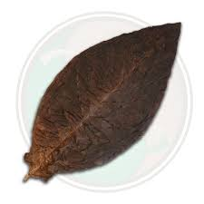
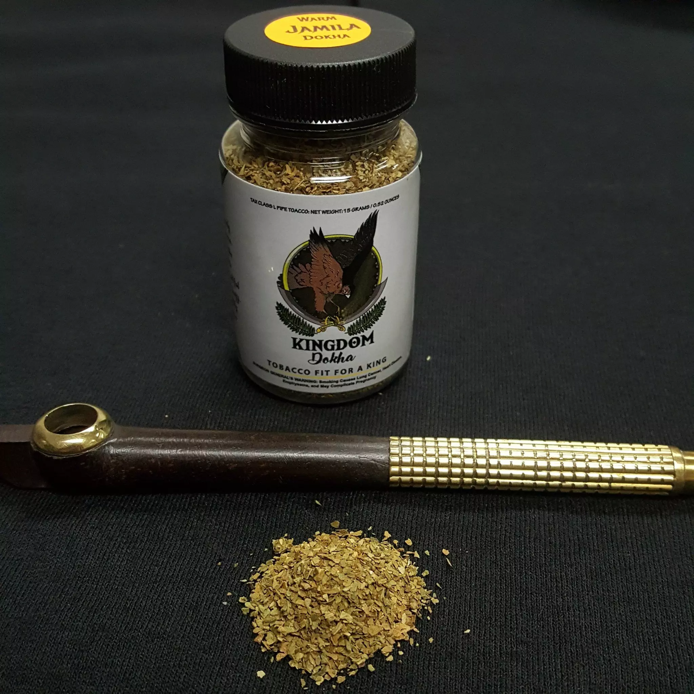

broadleaf
moreCavendish
 morecrojo
 moreCriollo
 moreDokha
 morebroadleaf
moreCavendish
 morecrojo
 moreCriollo
 moreDokha
 morecavendish:
Cavendish tobacco is tobacco that has been heat treated with fire or steam and then subjected to heavy pressure in order to produce a sweet taste with a moist texture. American, Dutch, and Danish varieties involve the addition of flavorings; while British Cavendish, commonly known as unsweetened or unflavored Cavendish brings out the natural sugars in the tobacco through pressure applied during the preparation process.[1] Cavendish tobacco is named after Sir Thomas Cavendish.
broadleaf:
'Connecticut Broadleaf', produces large, fine-grade leaves that are used for cigar wrappers. The lower grade leaves on the plants are used for cigar filler, blending and binder leaves. The leaves average about thirteen inches in width by twenty-six inches in length, are broad, strong, thin, elastic, silky, have small fibers, a sweetish taste, and cure light in color.
crojo:
Corojo is a type of tobacco, primarily used in the making of wrappers for cigars. The variety was originally grown in the Vuelta Abajo region of Cuba but is today grown exclusively in the Jamastran valley of Honduras and in the United States in Western Kentucky.
criolo:
Criollo is a type of tobacco, primarily used in the making of cigars. It was, by most accounts, one of the original Cuban tobaccos that emerged around the time of Columbus. The term means native seed, and thus a tobacco variety using the term, such as Dominican Criollo, may or may not have anything to do with the original Cuban seed nor the recent hybrid, Criollo '98.
dokha:
Dokha (Arabic: دوخة, "dizziness" or "vertigo") is a tobacco product, consisting of dried and finely shredded tobacco flakes mixed with herbs and spices. It originated in Iran during the 15th century.[1] Unlike hookah tobacco (also called "shisha" or "mu'assel"), dokha is not cured with molasses. Users smoke the tobacco blend in small quantities using a pipe called a midwakh. Because the midwakh pipe is used almost exclusively for smoking dokha, the terms are often used